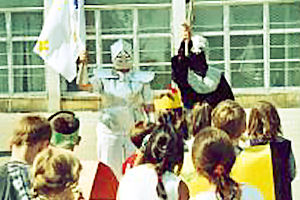

Medieval Fairs

La Maisnie Champenoise
can recreate all the atmosphere of the Middle Ages with dancers and musicians parading
in period costume.
It stages fights between knights kitted out in
chain mail and brandishing swords, battle-axes or flails.
It reproduces scenes of the knights' lives and their squires
in the Middle Ages.
Its crossbowman shows off all his skill
during demonstrations with his favorite weapon; he also gets the spectators to join in and
discover their talent.
The entire company is at the public's
disposal for answering any questions relating to medieval times.
Shows and Activities

According
to requirements and the desired services, La Maisnie Champenoise
can provide the appropriate number of participants, all wearing period costume and
fully armed. Our members can re-enact duels and organize fights involving
the different types of weapons used at the time: one and two-handed swords, battle-axes,
flails, halberds, maces, and many more.
The company
can set up a real medieval camp, complete with pavilions,
archery stands (bows and crossbows), the habergeon workshop (used to make chain mail),
the coin minting workshop and even the medieval forge...
It can also organize
a real knights' tournament!
Evening Parties, Weddings, etc.

La Maisnie Champenoise can specially recreate a large medieval feast, with desserts, jugglers and fire-eaters, magic tricks from a larger-than-life "Merlin", tales and troubadour songs, charm spells cast by "she-devils"...
Community Services
Two speakers, in
period costume and fully armed, are available for conferences and talks on feudal themes
as part of the school curriculum or on demand: the world of knighthood,
organization of the feudal system (economy, wars, religion, currency...),
the work of copyists (calligraphy, illumination, etc.) and the history of
costumes and weapons (manufacturing techniques).
La Maisnie Champenoise provides all the necessary media and aids
to back up the subjects: coins, weapons, costumes, helms and armor, seals, manuscripts, and much more.
For details of our prices and availability for the different services, write to Philippe, our halberdier: